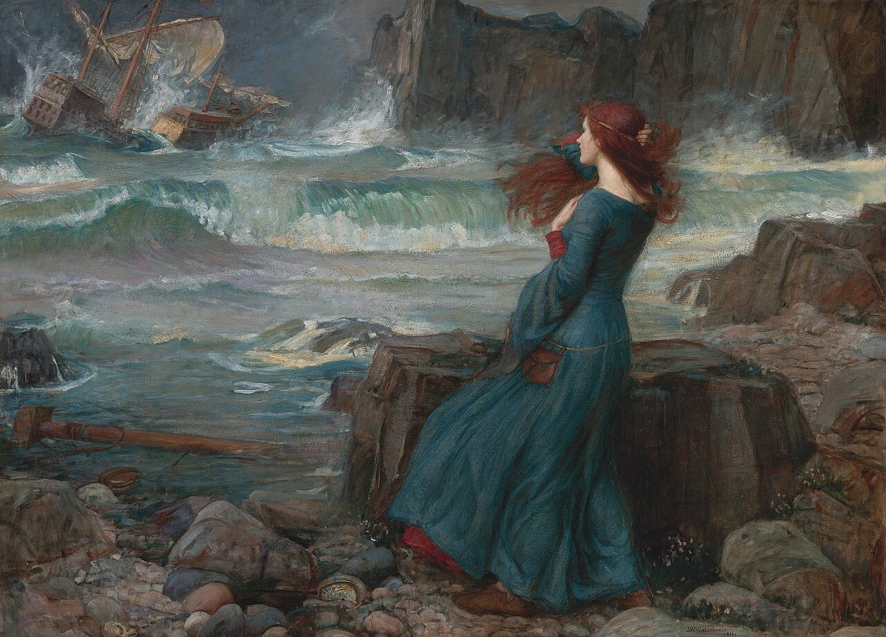

Sheet · a reading
Wyrd, Weird, and the Invention of Normal
- Specimen
- Wyrd, Weird, and the Invention of Normal
- Maker
- Helen Edgar
- First published
- More Realms, July 2026
- This text
- Helen’s essay, her outline, and her reading list, read out into a sheet. Her published sentences are quoted and linked wherever they appear. The argument is hers; the sentences around her quotations are ours, and this label is where we say so.
- Read
- 8 September 2026
- Read by
- Ryan Boren
- Terms
- Weird · Normal · Neuronormativity · Ethodiversity · Autistic Joy
There is a demotion inside the word weird. It began as wyrd — Old English for fate, for the thing that has power over you — and it ended up as the thing that is wrong with you. This sheet follows the drop, and asks who was standing at the bottom of it holding the new definition.
Before it meant strange,
it meant fate.
-
wyrd
Old English
Fate; that which comes to pass. Built on weorþan, to become. Kin to weorþ, the ancestor of worth. A force you answer to.
-
weird
c. 1400 onward
Having power to control fate — and then, by way of three women on a Scottish heath and an eighteenth-century stage, uncanny. A quality you carry.
-
weird
From about 1820
Odd-looking, strange, disturbingly different. A deviation you are corrected for. Set here in the institution’s own typeface, because by this point the institution is the one saying it.
The dates are from the Online Etymology Dictionary, which puts the sense odd-looking, strange, disturbingly different
at 1820. Everything above that third slip is more than a thousand years long. The sense that most people now think is the word is about two centuries old, and it arrived at almost exactly the same moment as normal did. That coincidence is the argument of this sheet.
A force you answer to
Helen opens her essay at the root:
In Old English, wyrd meant fate, but not necessarily the fixed, predetermined fate the word often suggests today.
Not fixed, because the verb underneath it is a verb of motion. Wyrd is formed on weorþan, to come to pass, to become. And the same Germanic root gives weorþ, which becomes modern English worth. Alby Stone, whose short book on the subject has been in print in one form or another since 1989, puts the three senses together in one line:
Old English wyrd combines all the qualities found in the names of the three nornir: it means ‘worth’; ‘death’; and that which will happen or come to be.
Worth and death and becoming, held in one syllable. Not a sentence handed down, but a running account of what a life has come to be worth by the end of it. Stone is blunt that the popular picture is the wrong one: what the sources actually describe, he writes, is something much more flexible and worthwhile than the rigid, impersonal and implacable force that fate is commonly expected to be.
The Old English poets did use it the hard way too. The Exeter Book’s Wanderer ends its opening sentence on a half-line that has been carried into English a hundred different ways:
wyrd bið ful ārǣd
Fate is wholly fixed — or wholly decreed, or wholly inexorable, depending on whose English you read it in.
Hold both. Wyrd was heavy. It was the thing you did not get to argue with, and an Anglo-Saxon audience would not have heard anything cosy in it. That is the point of the reclamation, not an obstacle to it. The word did not start out as a compliment and get insulted. It started out as a power, and it was demoted into a defect.
Three at the well
Where does a power like that live? In the Norse telling, at the foot of the world tree, in the hands of three women with a bucket. The Poetic Edda introduces them in six lines:
Þaðan koma meyiar, margs vitandi,þriár, ór þeim sal, er und þolli stendr;Urð héto eina, aðra Verðandi,—skaro á skíði— Skuld ina þriðio;þær lǫg lǫgðo, þær líf kuroalda bǫrnum, ørlǫg seggia.
Thence come the maidens mighty in wisdom,Three from the dwelling down ’neath the tree;Urth is one named, Verthandi the next, —On the wood they scored, — and Skuld the third.Laws they made there, and life allottedTo the sons of men, and set their fates.
Popular retellings hand the three of them out as past, present, and future, and Helen is right to say the names suggest something more interesting than a timeline. Urð is what has come to pass. Verðandi is the present participle of verða — to happen, to become — the same verb that wyrd descends from. Skuld is debt: what is owed, what falls due. Stone reads the trio as an accounting of worth rather than a clock, and the last word of the stanza, ørlǫg, is not fate
in the sense of a script but something closer to that which is of the law — the particular conditions under which one particular life has to be lived.
So the middle sister is a verb in the continuous tense. She is not the present moment. She is becoming, ongoing, unfinished, still being carved. If you were going to build an idea of a person on any of the three, that is the one to build it on.
Four hands on the same three women
The word survived into Scots as a plain, unremarkable term for the Fates, and it is in Scottish chronicle that Macbeth meets them. Then four different people get hold of the same encounter over four hundred and thirty-five years, and each one leaves fingerprints:
…either the weird sisters, that is (as ye would say) the goddesses of destinie, or else some nymphs or feiries, indued with knowledge of prophesie by their necromanticall science…
Raphael Holinshed, Chronicles, 1587 (1808 reprint, p. 269), transcribed in Bek-Pedersen (2022), p. 64. The weyward Sisters, hand in hand,
Posters of the Sea and Land,Shakespeare, Macbeth I.iii, First Folio, 1623. The Folio never prints weird: it prints weyward and, later in the play, weyard, six times in all. Text from the Furness Variorum via Bek-Pedersen (2022), p. 73. This word, in general, signifies perverse, froward, moody, obstinate, intractable etc. and is everywhere so used by our Shakespeare
Lewis Theobald on wayward, The Works of William Shakespeare, volume 5 (London, 1733), p. 392 — explaining why he was replacing it with weird. Quoted in Bek-Pedersen (2022), p. 73. Theobald may in one sense revert the picture back to the Scottish tradition of the ‘weird sisters’ by substituting ‘weyward’ with ‘weird’, but in doing so he bypasses Shakespeare altogether.
Karen Bek-Pedersen, Scottish Studies 39 (2022), p. 76.
Read the four slips in order and you can watch it happen. Holinshed cannot decide what the three of them are — goddesses, or nymphs, or fairies, or necromancers — and reaches for all four at once. Shakespeare, writing during the witch trials, for a king who had written a book on witchcraft, resolves the confusion by making them witches and calling them weyward: perverse, self-willed, contrary. Theobald, a hundred and ten years later, decides that must have been a copyist’s error and puts weird back. And the Weird Sisters that everybody knows — the ones with the cauldron, the ones in every school edition — are Theobald’s.
Which is a complication for the reclamation, and this sheet is not going to smooth it out. Bek-Pedersen’s conclusion is that Shakespeare wrote witches on purpose and that Theobald misread him. If she is right, then reclaiming the Weird Sisters as figures of fate is reclaiming an editor’s Shakespeare rather than Shakespeare’s. That is worth saying out loud, because the alternative is a nice story with a footnote quietly removed from it. It also does not damage the argument much: the drift from fate to wickedness to oddness happened whoever spelled what. The interesting thing is not that one editor got it wrong. It is that weyward and weird could be confused for each other at all — that self-willed and fated were already close enough on the page to swap places.
That which does not belong
Mark Fisher, writing about the weird as a mode rather than a genre, gives it a definition that does not mention strangeness of appearance at all:
…the weird is that which does not belong. The weird brings to the familiar something which ordinarily lies beyond it, and which cannot be reconciled with the “homely” (even as its negation).
That is a relation, not a property. Nothing is weird by itself; a thing is weird with respect to a frame, and the frame is somebody’s. Which means the sentence you are weird
is always, on inspection, the sentence you are outside the arrangement I was expecting
— and it says at least as much about the arrangement as about you.

the third man that e’er I saw— she has no average to hold a newcomer against. In the last act she gets the line about the brave new world, and she means it.
Fisher goes further, and this is the part the neurodiversity movement has been living inside for thirty years without necessarily citing him for it. The feeling of wrongness that the weird produces, he writes, is often a sign that we are in the presence of the new. The weird here is a signal that the concepts and frameworks which we have previously employed are now obsolete.
The discomfort is data. It is the frame reporting its own limits.
The child they said was swapped
There is an older and much worse version of being read as not-belonging, and it is worth putting on the same sheet as the Weird Sisters, because it comes out of the same fairy country.

Across Northern Europe, when a child did not develop the way a family expected, one available explanation was that the child had been taken and something else left in the cradle. Susan Schoon Eberly, working in a hospital developmental disabilities department, went through the fairy literature and read it as a body of folk diagnosis: changeling stories, she argues, are the folk record of children born with conditions that had no other name. Her article is called Fairies and the Folklore of Disability: Changelings, Hybrids and the Solitary Fairy, and it is not a charming read. The remedies attached to changeling belief were exposure, immersion, beating, and fire. In March 1895, at Ballyvadlea in County Tipperary, Bridget Cleary was burned at her own hearth by her husband, who had spent days insisting that the woman in the house was not his wife but a changeling. Nine people were charged over her death. He was convicted of manslaughter.
So: no romanticising the fae on this sheet. Being called a changeling was not a compliment about your interesting inner life. It was the first draft of this child is wrong,
and it had a body count.
What the same tradition also holds, though, is the other half of the story — the one where somebody refuses to let go. In the Scots ballad of Tam Lin, Janet is told exactly what the fairy host will do to the man she is trying to get back. They will change him in her arms, over and over, into things designed to make her drop him:
‘They’ll turn me in your arms, lady, Into an esk and adder; But hold me fast, and fear me not, I am your bairn’s father.‘They’ll turn me to a bear sae grim, And then a lion bold; But hold me fast, and fear me not, As ye shall love your child.‘Again they’ll turn me in your arms To a red het gaud of airn; But hold me fast, and fear me not, I’ll do to you nae harm.
Hold me fast, and fear me not. Three times, once per transformation, and the instruction never changes. The ballad is completely clear that the shapes are not the problem — the shapes are a test of whether the person holding on will keep holding on. Janet does not fix him, and she is not asked to. She is asked to stay, through the adder and the bear and the bar of iron, and to know the whole time that the thing in her arms is the person she came for.
Set beside a hundred years of therapy aimed at making a child hold still, that is a startling piece of advice to find in a ballad. It is also, more or less exactly, what every Autistic adult writing about meltdown says they needed and did not get.
And the other half of the fae bargain, the one where the child is glad to go, is the poem everybody knows:
Come away, O human child! To the waters and the wild With a faery, hand in hand, For the world’s more full of weeping than you can understand.
For he comes, the human child, / To the waters and the wild… / From a world more full of weeping than he can understand.
Yeats knew what he was doing with that switch. Three times it is an invitation; the fourth time it is a report, and the child has gone. Read it as a poem about leaving a world that will not have you and it is unbearable. Read it as a poem about finding the other people who are also leaving, and it is the founding document of every weird scene there has ever been.
Refusal is not a no
Which brings up the thing that gets called withdrawal, or non-compliance, or refusal to engage, and is usually none of those.
Eve Tuck and K. Wayne Yang, building on Audra Simpson’s account of the Kahnawà:ke Mohawk community declining to be made legible to anthropology, argue that a refusal is not an absence. It is a position:
Refusal is not just a “no,” but a redirection to ideas otherwise unacknowledged or unquestioned.
R-Words: Refusing Research, in Django Paris and Maisha T. Winn (eds), Humanizing Research: Decolonizing Qualitative Inquiry with Youth and Communities (Thousand Oaks: Sage, 2014), p. 239. They are drawing on Audra Simpson,
On Ethnographic Refusal: Indigeneity, ‘Voice’ and Colonial Citizenship, Junctures 9 (2007), 67–80.
Two pages later they put it flatly: refusal is not a prohibition but a generative form.
A refusal sets a limit on what the powerful get to know, and a methodology of refusal treats that limit as productive, as indeed a good thing.
The transposition here is ours, and it needs saying plainly. Tuck and Yang are writing about settler colonialism, Indigenous sovereignty, and the research apparatus, and their argument is grounded in that and not offered as a general theory of saying no. Lifting it onto masking is a move we are making, not one they made. What survives the move is the structure: that declining to render yourself legible on somebody else’s terms is a stance with content, and that the demand for legibility was never neutral. The unmasked Autistic person who stops performing fluency is not failing to communicate. They are declining a translation, and the translation was always in one direction.
Joy is not a coping strategy
The other thing that gets misread as a symptom is delight.
Elliot Wassell’s study of Autistic joy put a questionnaire to eighty-six Autistic people, most of them women, girls, or non-binary, asking whether they experience joy and what it is made of. Sixty-seven per cent said they often do; ninety-four per cent said they actively enjoy aspects of being Autistic. The paper’s finding is not that Autistic people cope well. It is that the joy is native, and the obstacle is other people.
…the key barrier to joyful experience is not autism itself but other people’s lack of acceptance of authentic autistic behaviours such as stimming and pursuit of special interests.
Elliot Wassell, Experiences of autistic joy
, Disability & Society 41:1 (2026), 236–261, from the abstract.No matter how ‘weird’, ‘age inappropriate’, or ‘useless’ our passions might seem to them, for us, this is what makes life worth living.
Participant 28, quoted in Wassell (2026), p. 249. Queercrip joy is more than finding new happy objects—it is refusing to collapse ‘positive’ affects and ‘negative’ affects into a mutually exclusive binary.
Megan Ingram and Kai Jacobsen, Both because of and in spite of: Towards the reclamation of queercrip joy
, Sexualities 28:3 (2025), 795–810, at p. 804.
Note where Participant 28 puts the scare quotes. Not around passions. Around weird — the word arriving from outside, in somebody else’s voice, to be held at arm’s length while the sentence carries on.
Ingram and Jacobsen supply the guard rail that stops any of this becoming a slogan. Queercrip joy, they argue, exists both because of and in spite of pain: it is not the opposite of suffering, not a replacement for it, and not evidence that everything is fine. Joy and grief are simultaneous and co-constitutive, and a joy that has to pretend otherwise is just cheerfulness with a quota. That is the difference between celebrating Autistic joy and using it to change the subject.
Where the whimsy gets policed out
None of this is subtle in practice. There is a whole apparatus for training play, stimming, and delight out of people, and most of us went through it before we were ten.
odd difficult immature too much attention-seeking non-compliant weird
Those are the words, and behind them is behaviourism in the classroom, deficit ideology in the paperwork, and professionalism at work — the last of which is mostly a dress code for affect, requiring legible seriousness at all times and reading enthusiasm as a lapse. The Stimpunks glossary has the structural name for the whole arrangement: neuronormativity, a set of norms and expectations that centre one way of functioning as the right way, then treat everything else as a disorder. Wassell’s participants describe its effects in one line each. Less pressure to always be doing. Not being forced to mask so long we lose touch with ourselves.
Where it gets let back in
The counter-image is not a slogan either; it is a set of rooms. Stimpunks builds and describes them: caves, campfires, and watering holes as the three spatial modes a mixed group of humans actually needs, and Cavendish Space as the name for a place designed around monotropic attention and sensory reality instead of around compliance. The Campfire Learn Together sessions are the working example — including the one on the mycelial worldview, which is about fungi and is therefore about distributed intelligence with no commanding centre, decomposition as a form of care, and mischief as a method.
What all of those spaces have in common is that nobody in them is managing your weirdness. That is the entire specification. Everything else — the lighting, the seating, the option to leave — follows from it.
Normal is younger than the railways
Here is the part that reframes everything above. Wyrd is more than a thousand years old. Normal, as a thing a person can be, is about two hundred.
Robert Chapman’s Empire of Normality tells the story through Adolphe Quetelet, a Belgian astronomer who turned the statistical tools built for tracking stars onto human beings, and published l’homme moyen — the average man — in 1835. Quetelet did not stop at describing the average. He recommended it:
If the average man were completely determined… we might consider him as the type of perfection; and everything differing from his proportions or condition, would constitute… a monstrosity.
he wroteand
he went on; the ellipses here mark those breaks and nothing else.
Chapman’s own line on what happened next is the one to keep:
The error curve developed to predict the course of stars now applied to human normativity, and to be abnormal was to be a mistake of nature.
The invention of normality. Quoted from the ebook, which carries no page numbers.
The word for a deviation, in the mathematics Quetelet borrowed, was error. It meant a measurement that had missed the star. Transferred onto people, with the average recast as the ideal, it meant a person who had missed being right. And Chapman’s larger argument is that this was not a discovery that happened to have consequences: the Empire of Normality is an apparatus of material relations, social practices, scientific research programmes, bureaucratic mechanisms, economic compulsions, and administrative procedures,
and it tightens the acceptable range because a system organised around productivity has a use for a narrow one.
Set the two clocks side by side, which is Helen’s move and the best sentence in her essay:
Somewhere along the way, worth got redefined as fitting in, while being different stopped being something we valued at all.
That is the whole demotion in one sentence, and it is exact. Weorþ and wyrd came from the same root: worth was what a life turned out to be, measured at the end, in its own terms. The bell curve replaced that with worth as proximity to a mean — measurable at any moment, against everybody else, in somebody else’s units.
Wider than neuro
One more frame, because neuronormativity is not the only normativity in the room and the neurodiversity paradigm is not the widest available lens.
Ombre Tarragnat proposes ethodiversity — short for ethological diversity,
referring to the intra- and inter-specific variabilities and differences in behavioural or existential styles in (human and nonhuman) animals
. The term, Tarragnat writes, parallels ‘biodiversity’ and ‘neurodiversity’
, and contains neurodiversity without being limited to it: it takes in the somatic and the behavioural as well as the neurological, and it learns from the range of ways animals are.
Which is a paradigm with room in it for whimsy. Not whimsy as a therapeutic technique or a wellbeing intervention or a strength to be leveraged, but as one existential style among many — no more in need of a justification than a heron’s way of standing in a river. Chapman notes in passing that neuroqueering, in Nick Walker and Remi Yergeau’s sense, focuses on embracing weird potentials within one’s neurocognitive space
. Weird potentials. The word is doing its oldest job in that phrase: not defective, and not even strange, but what this life might still turn out to be.
What this sheet will not tidy
Three things, left standing.
An etymology is not an argument. That wyrd once meant fate does not make weirdness good, any more than the Latin in disability settles anything about Disabled people. Words drift; that is what words do. The reason to tell this particular drift is not that the old meaning was true and the new one is false. It is that the new one arrived on a specific date, in specific company, doing a specific job — and a meaning with a birth certificate can be argued with in a way that a timeless fact cannot.
The Weird Sisters were probably witches. See the wall above. The best scholarship on the question says Shakespeare wrote weyward and meant it, and that the Fates were put back into the play by an editor in 1733. Anyone reclaiming those three women as figures of fate is reclaiming Theobald’s text. It is still a good reclamation. It is not the one the First Folio supports.
Nobody chooses to be read as weird. Weird Pride is a reclamation, and reclamations are for people who already carry the word whether they want it or not. The people who can put weirdness on and take it off again are not the ones the word costs anything. Weirdwashing is the failure mode: the aesthetic of deviance, adopted by an institution that will still send the same child out of the same room.
Still taking shape
Helen ends her essay by putting worth back where she found it:
I think this is what wyrd actually means, human worth that was never about being static, never about being plotted somewhere along someone else’s bell curve, but about always moving, always still taking shape.
Let’s embrace our wyrd, weirdness, and everyone else’s too.
The middle sister is the one holding the bucket. Not what has come to pass, and not what is owed — the one whose name is a verb still running. Verðandi: becoming. A life is not a point on a distribution. It is a thing being carved, in the present participle, and nobody has finished reading it yet.
Find out more about Weird Pride, which falls on 4 March, and which Helen observes in July on the grounds that every day is one.
Provenance Mounted . Label corrected four times and re-determined once — the byline first, and on Helen Edgar’s own word.